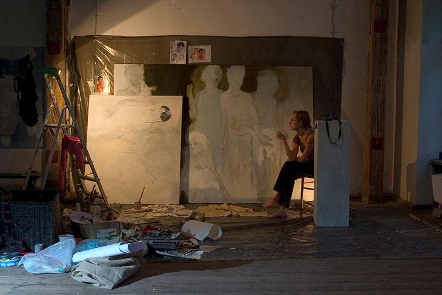
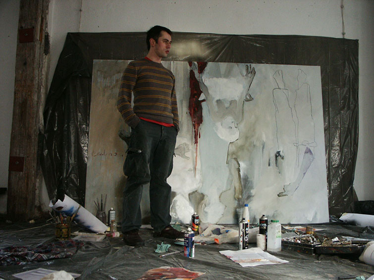
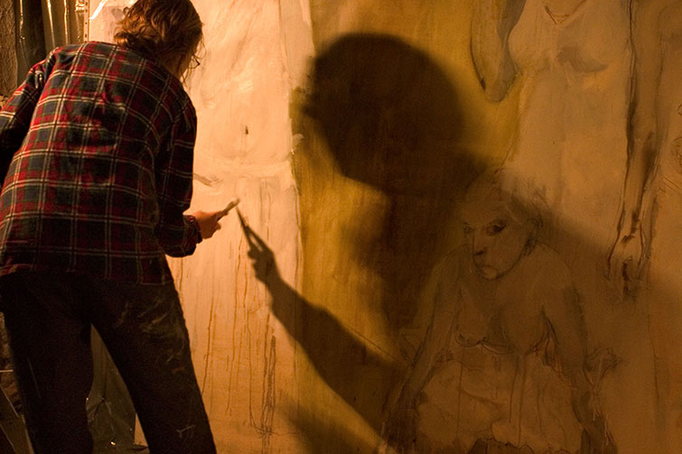
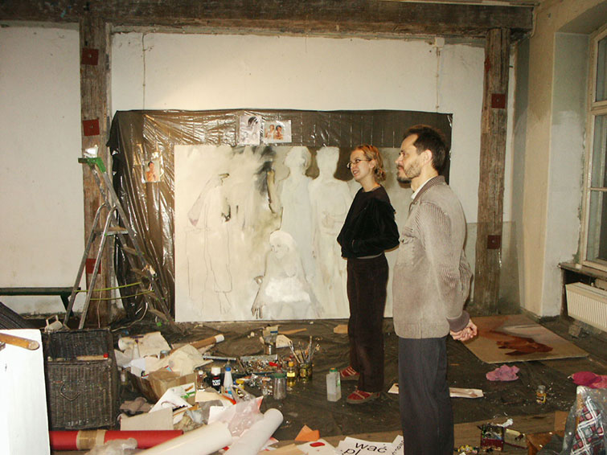
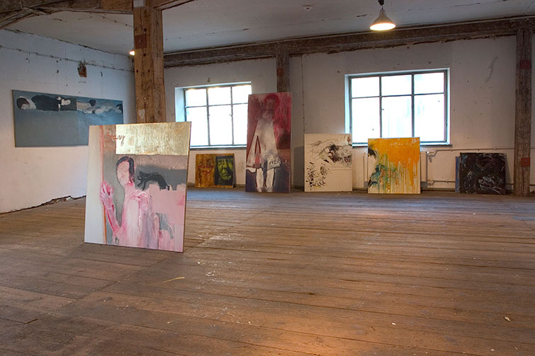
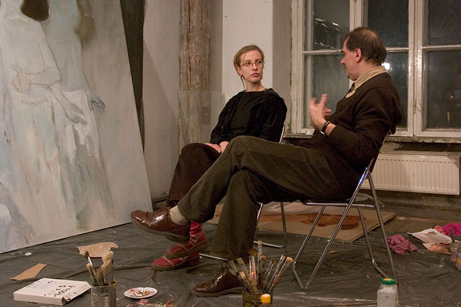
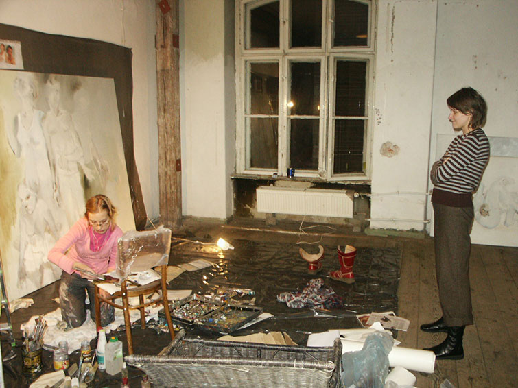
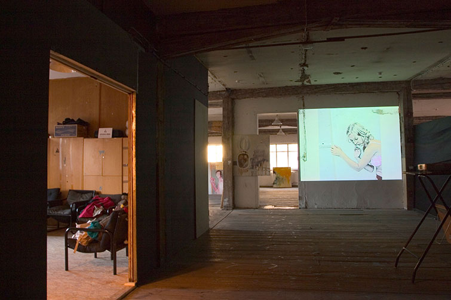
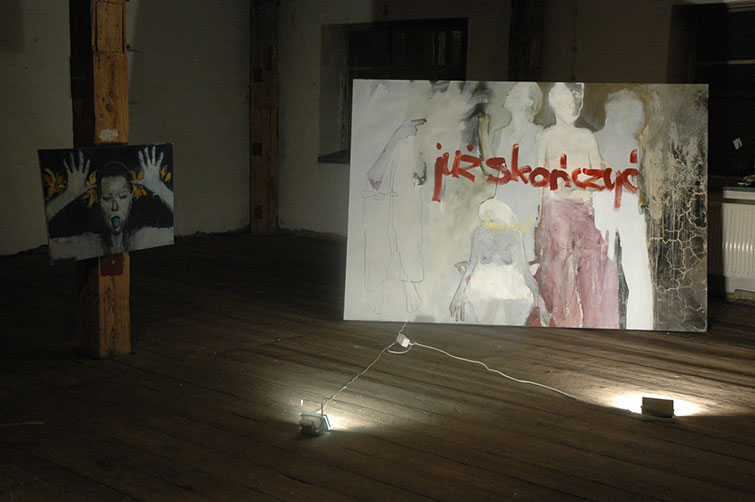

ANTYWYSTAWA









Pierwsza indywidualna wystawa - dzialanie Izabeli Chamczyk, gdzie mozna bylo zaobserwowac na zywo "proces tworzenia", wtargnac do przestrzeni intymnej, do pracowni artystki i wziac w nim udzial, stworzyc z prac artystki wlasna wystawe.
Artystka przenosi sie na miesiac do galerii ze zbiorowej pracowni studenckiej z Akademii Sztuk Pieknych we Wroclawiu, gdzie nie bylo dla niej miejsca do malowania.
Dzialanie konczy sie po miesiacu finisazem, na ktory artystka nie przyszla - dzialajac przewrotnie, odnoszac sie do dzialania Wlodzimierza Borowskiego "Fubki tarb".
Galeria BWA Studio, Wroclaw, 2007.
kurator wystawy: Piotr Stasiowski
realizacja filmu: RELAZ TV
foto: Daniel Chruszcz